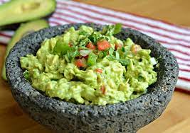

Guacamole

Description
Guacamole is an avocado-based dip used in Mexican and American cuisines. It is simple to make and can me used in a variety of ways, including as a dip, spread, or condiment.
Ingredients
- 2 avocados
- 1 diced jalapeno
- 2 tablespoons lime juice
- 2 tablespoons chopped cilantro
- 2 tablespoons chopped onion
- salt to taste
Steps
- Peel and mash avocados in a bowl until smooth and creamy. Remove seeds.
- Chop ingredients
- Mix all ingredients into bowl with avocados and stir until evenly mixed
- Enjoy!